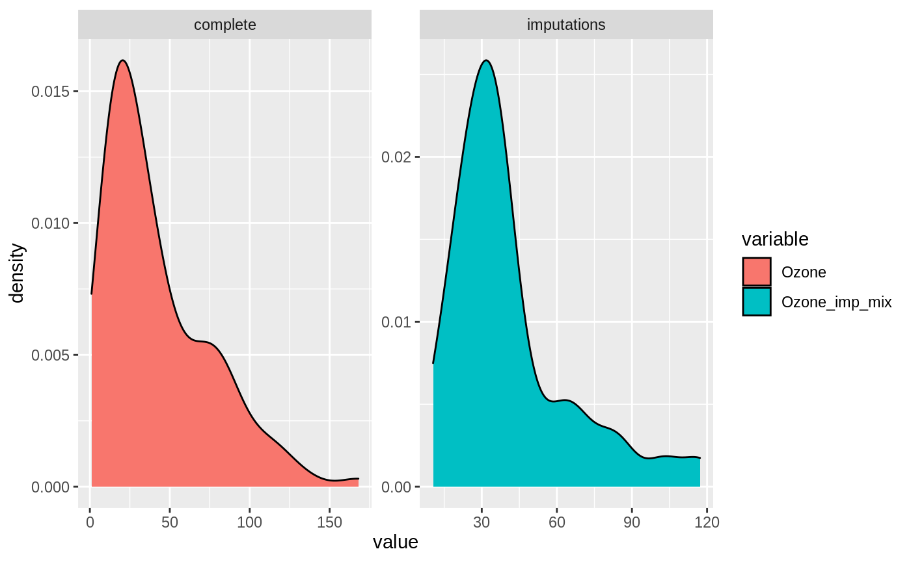

vignettes/miceFast-intro.Rmd
miceFast-intro.RmdLoading the package and setting a seed:
pkgs = c('miceFast','data.table','magrittr','mice','car','dplyr','ggplot2') inst = lapply(pkgs, library, character.only = TRUE)
set.seed(123456)
Fast imputations under the object-oriented programming paradigm. There was used quantitative models with a closed-form solution. Thus package is based on linear algebra operations. The biggest improvement in time performance could be achieve for a calculation where a grouping variable have to be used. A single evaluation of a quantitative model for the multiple imputations is another major enhancement. Moreover there are offered a few functions built to work with popular R packages.
miceFast was compared1 with the mice package. For grouping option there was used a basic R looping and popular dplyr/data.table packages. Summing up, miceFast offer a relevant reduction of a calculations time for:
Example (2019-08-07):
Performance Summary
If you are interested about the procedure of testing performance check performance_validity.R file at the extdata folder.
system.file("extdata","performance_validity.R",package = "miceFast")
Additional plots for simulations with certain parameters (but feel free to change them) are located:
system.file("extdata","images",package = "miceFast")
Moreover there are offered a few functions built to work with the popular R packages such as ‘data.table’.
Missing data is a common problem. The easiest solution is to delete observations for which a certain variable is missing. However this will sometimes deteriorate quality of a project. Another solution will be to use methods such as multiple/regular imputations to fill the missing data. Non missing independent variables could be used to approximate a missing observations for a dependent variable. R or Python language are user-friendly for data manipulation but parallely brings slower computations. Languages such as C++ gives an opportunity to boost our applications or projects.
Usage of fill_NA and fill_NA_N functions from miceFast - this functions should be resistant to glitches from an user activity perspective and a data structure.
# airquality dataset with additional variables data(air_miss)
# VIF - values bigger than 10 (around) suggest that there might be a collinearity problem. # VIF is high for Solar.R and x_character which is obvious - x_character is a factor version of numeric Solar.R air_miss[,.(VIF(.SD,posit_y='Ozone', posit_x=c('Solar.R', 'Wind', 'Temp', 'x_character', 'Day', 'weights', 'groups')))]
## V1
## 1: 24.978996
## 2: 1.445308
## 3: 3.077776
## 4: 42.248792
## 5: 1.083795
## 6: 1.100853
## 7: 2.954588# IMPUTATIONS # Imputations with a grouping option (models are separately assessed for each group) # taking into account provided weights air_miss[,Solar_R_imp := fill_NA_N(x=.SD, model="lm_bayes", posit_y='Solar.R', posit_x=c('Wind','Temp','Intercept'), w=.SD[['weights']], times=100),by=.(groups)] %>% # Imputations - discrete variable .[,x_character_imp := fill_NA(x=.SD, model="lda", posit_y='x_character', posit_x=c('Wind','Temp','groups'))] %>% # logreg was used because almost log-normal distribution of Ozone # imputations around mean .[,Ozone_imp1 := fill_NA(x=.SD, model="lm_bayes", posit_y='Ozone', posit_x=c('Intercept'), logreg=TRUE)] %>% # imputations using positions - Intercept, Temp .[,Ozone_imp2 := fill_NA(x=.SD, model="lm_bayes", posit_y=1, posit_x=c(4,6), logreg=TRUE)] %>% # model with a factor independent variable # multiple imputations (average of x30 imputations) # with a factor independent variable, weights and logreg options .[,Ozone_imp3 := fill_NA_N(x=.SD, model="lm_noise", posit_y='Ozone', posit_x=c('Intercept','x_character_imp','Wind','Temp'), w=.SD[['weights']], logreg=TRUE, times=30)] %>% .[,Ozone_imp4 := fill_NA_N(x=.SD, model="lm_bayes", posit_y='Ozone', posit_x=c('Intercept','x_character_imp','Wind','Temp'), w=.SD[['weights']], logreg=TRUE, times=30)] %>% .[,Ozone_imp5 := fill_NA(x=.SD, model="lm_pred", posit_y='Ozone', posit_x=c('Intercept','x_character_imp','Wind','Temp'), w=.SD[['weights']], logreg=TRUE),.(groups)] %>% # Average of a few methods .[,Ozone_imp_mix := apply(.SD,1,mean),.SDcols=Ozone_imp1:Ozone_imp5] %>% # Protecting against collinearity or low number of observations - across small groups # Be carful when using a data.table grouping option # because of lack of protection against collinearity or low number of observations. # There could be used a tryCatch(fill_NA(...),error=function(e) return(...)) .[,Ozone_chac_imp := tryCatch(fill_NA(x=.SD, model="lda", posit_y='Ozone_chac', posit_x=c('Intercept','Month','Day','Temp','x_character_imp'), w=.SD[['weights']]), error=function(e) .SD[['Ozone_chac']]),.(groups)]
# VIF - values bigger than 10 (around) suggest that there might be a collinearity problem. # VIF is high for Solar.R and x_character which is obvious - x_character is a factor version of numeric Solar.R air_miss %>% do(vifs=VIF(.,posit_y='Ozone', posit_x=c('Solar.R', 'Wind', 'Temp', 'x_character', 'Day', 'weights', 'groups'))) %>% unlist()
## vifs1 vifs2 vifs3 vifs4 vifs5 vifs6 vifs7
## 24.978996 1.445308 3.077776 42.248792 1.083795 1.100853 2.954588# IMPUTATIONS air_miss = air_miss %>% # Imputations with a grouping option (models are separately assessed for each group) # taking into account provided weights group_by(groups) %>% do(mutate(.,Solar_R_imp = fill_NA(x=., model="lm_pred", posit_y='Solar.R', posit_x=c('Wind','Temp','Intercept'), w=.[['weights']]))) %>% ungroup() %>% # Imputations - discrete variable mutate(x_character_imp = fill_NA(x=., model="lda", posit_y='x_character', posit_x=c('Wind','Temp'))) %>% # logreg was used because almost log-normal distribution of Ozone # imputations around mean mutate(Ozone_imp1 = fill_NA(x=., model="lm_bayes", posit_y='Ozone', posit_x=c('Intercept'), logreg=TRUE)) %>% # imputations using positions - Intercept, Temp mutate(Ozone_imp2 = fill_NA(x=., model="lm_bayes", posit_y=1, posit_x=c(4,6), logreg=TRUE)) %>% # multiple imputations (average of x30 imputations) # with a factor independent variable, weights and logreg options mutate(Ozone_imp3 = fill_NA_N(x=., model="lm_noise", posit_y='Ozone', posit_x=c('Intercept','x_character_imp','Wind','Temp'), w=.[['weights']], logreg=TRUE, times=30)) %>% mutate(Ozone_imp4 = fill_NA_N(x=., model="lm_bayes", posit_y='Ozone', posit_x=c('Intercept','x_character_imp','Wind','Temp'), w=.[['weights']], logreg=TRUE, times=30)) %>% group_by(groups) %>% do(mutate(.,Ozone_imp5 = fill_NA(x=., model="lm_pred", posit_y='Ozone', posit_x=c('Intercept','x_character_imp','Wind','Temp'), w=.[['weights']], logreg=TRUE))) %>% ungroup() %>% # Average of a few methods mutate(Ozone_imp_mix = rowMeans(select(.,starts_with("Ozone_imp")))) %>% # Protecting against collinearity or low number of observations - across small groups # Be carful when using a data.table grouping option # because of lack of protection against collinearity or low number of observations. # There could be used a tryCatch(fill_NA(...),error=function(e) return(...)) group_by(groups) %>% do(mutate(.,Ozone_chac_imp = tryCatch(fill_NA(x=., model="lda", posit_y='Ozone_chac', posit_x=c('Intercept','Month','Day','Temp','x_character_imp'), w=.[['weights']]), error=function(e) .[['Ozone_chac']]))) %>% ungroup()
# Distribution of imputations vs Distribution of initial data air_miss$Ozone_NA = ifelse(is.na(air_miss$Ozone),'imputations','complete') air_miss = as.data.table(air_miss) air_miss[,c('Ozone','Ozone_imp_mix','Ozone_NA')] %>% melt(id=c('Ozone_NA'),measure=c('Ozone','Ozone_imp_mix')) %>% .[(((Ozone_NA=='imputations') & (variable=='Ozone_imp_mix'))|((Ozone_NA=='complete') & (variable=='Ozone'))),] %>% ggplot2::ggplot(.,ggplot2::aes(x=value,fill=variable)) + ggplot2::geom_density() + ggplot2::facet_wrap(Ozone_NA ~.,scales='free')

Available constructors:
new(corrData,nr_cat,n_obs,means,cor_matrix)
new(corrData,n_obs,means,cor_matrix)
where:
nr_cat : number of categories for discrete dependent variablen_obs : number of observationsmeans: center independent variablescor_mat : positive defined correlation matrixrelevant class methods:
fill("type") : generating data [return a numeric matrix] - data with correlated variables where first variable is of binomial,discrete or continuous type.type:character - possible options (“contin”,“binom”,“discrete”)
Available constructors:
new(miceFast)
relevant class methods:
set_data(x) - providing the data by a reference - a numeric matrix [void]get_data() - retrieving the data [return a numeric matrix] - the same values as provided by reference x, recommended to use x directlyset_g(g) - providing the grouping variable by a reference - a numeric vector - positive values [void]get_g() - retrieving the grouping variable [return a numeric vector] - the same values as provided by reference g, recommended to use g directlyset_w(w) - providing the weighting variable by a reference - a numeric vector - positive valuesget_w() - retrieving the weighting variable [return a numeric vector] - the same values as provided by reference w, recommended to use w directlyget_index() - getting the index [return a integer vector] - useful after automatic sorting procedureimpute("model",posit_y,posit_x) - impute data under characteristics form object like a optional grouping or weighting variable [return a list with 3 vectors: a numeric vector “imputations” dependent variable with replaced Na values, a integer vector “index_imputed” positions where data was imputed, a integer vector “index_full” positions which were used to assess the model]impute_N("model2",posit_y,posit_x,times) - multiple imputations - impute data under characteristics form object like a optional grouping or weighting variable - works for (“lm_bayes”,“lm_noise”) - [return a list with 3 vectors: a numeric vector “imputations” dependent variable with replaced Na values by average of N results, a integer vector “index_imputed” positions where data was imputed, a integer vector “index_full” positions which were used to assess the model]update_var(posit_y,imputations) - permanently update variable at the object and data. WARNING, use it only if you are sure about model parameters. [void]get_models() - possible quantitative models for a certain type of dependent variable [return a character vector: recommended models for impute and impute_N methods]get_model() - a recommended quantitative model for a certain type of dependent variable [return a character: recommended model for impute and impute_N methods] - useful while loopingwhich_updated() - which variables were modified by update_var at the object (and data) [return a integer vector: positions at provided data at which variables were update by update_var method]sort_byg() - sort data by the grouping variable [void]is_sorted_byg() - is data sorted by the grouping variable [void]vifs(posit_y,posit_x) - Variance inflation factors (VIF) [return a numeric vector: VIF for all variables provided by posit_x] x : numeric matrix - variablesg : numeric vector - you could build it form several discrete variablesw: numeric vector with positive values - weights for weighted linear regressionsmodel: character - a possible options (“lda”,“lm_pred”,“lm_bayes”,“lm_noise”)posit_y: integer - a position of dependent variableposit_x: integer vector - positions of independent variablesimputations : numeric vector - imputationstimes : integer - number of multiple imputationsFor a simple mean imputations add intercept to data and use “lm_pred”
The lda model is assessed only if there are more than 15 complete observations and for the lms models if the number of independent variables is smaller than the number of observations.
###Imputations
miceFast module usage:
Remember that a matrix could be build only under a one data type so factor variables have to be melted use model.matrix to get numeric matrix from data.frame - see Tips in this document
#install.packages("mice") data = cbind(as.matrix(mice::nhanes),intercept=1,index=1:nrow(mice::nhanes)) model = new(miceFast) model$set_data(data) #providing data by a reference model$update_var(2,model$impute("lm_pred",2,5)$imputations) #OR not recommended #data[,2] = model$impute("lm_pred",2,5)$imputations #model$set_data(data) #Updating the object model$update_var(3,model$impute("lda",3,c(1,2))$imputations) #Old slow syntax model$update_var(4,rowMeans(sapply(1:10,function(x) model$impute("lm_bayes",4,c(1,2,3))$imputations))) #New syntax - impute_N model$update_var(4,model$impute_N("lm_bayes",4,c(1,2,3),10)$imputations) #When working with 'Big Data' #it is recommended to occasionally manually invoke a garbage collector `gc()` # Be careful with `update_var` because of the permanent update at the object and data # That is why `update_var` could be used only ones for a certain column # check which variables was updated - inside the object model$which_updated()
## [1] 2 3 4head(model$get_data(),3)
## [,1] [,2] [,3] [,4] [,5] [,6]
## [1,] 1 26.5625 1 159.0947 1 1
## [2,] 2 22.7000 1 187.0000 1 2
## [3,] 1 26.5625 1 187.0000 1 3head(data,3)
## age bmi hyp chl intercept index
## 1 1 26.5625 1 159.0947 1 1
## 2 2 22.7000 1 187.0000 1 2
## 3 1 26.5625 1 187.0000 1 3## age bmi hyp chl
## 1 1 NA NA NA
## 2 2 22.7 1 187
## 3 1 NA 1 187rm(model)
Model with additional parameters: - data sorted by the grouping variable
data = cbind(as.matrix(airquality[,-5]),intercept=1,index=1:nrow(airquality)) weights = rgamma(nrow(data),3,3) # a numeric vector - positive values groups = as.numeric(airquality[,5]) # a numeric vector not integers - positive values - sorted increasingly model = new(miceFast) model$set_data(data) # providing data by a reference model$set_w(weights) # providing by a reference model$set_g(groups) # providing by a reference #impute adapt to provided parmaters like w or g #Simple mean - permanent imputation at the object and data model$update_var(1,model$impute("lm_pred",1,c(6))$imputations) model$update_var(2,model$impute_N("lm_bayes",2,c(1,3,4,5,6),10)$imputations) #Printing data and retrieving an old order head(cbind(model$get_data(),model$get_g(),model$get_w())[order(model$get_index()),],4)
## [,1] [,2] [,3] [,4] [,5] [,6] [,7] [,8] [,9]
## [1,] 41 190 7.4 67 1 1 1 5 1.2809043
## [2,] 36 118 8.0 72 2 1 2 5 0.3350294
## [3,] 12 149 12.6 74 3 1 3 5 0.1997905
## [4,] 18 313 11.5 62 4 1 4 5 0.9479004head(airquality,3)
## Ozone Solar.R Wind Temp Month Day
## 1 41 190 7.4 67 5 1
## 2 36 118 8.0 72 5 2
## 3 12 149 12.6 74 5 3## [,1] [,2] [,3] [,4] [,5] [,6] [,7] [,8] [,9]
## [1,] 41 190 7.4 67 1 1 1 5 1.2809043
## [2,] 36 118 8.0 72 2 1 2 5 0.3350294
## [3,] 12 149 12.6 74 3 1 3 5 0.1997905## Ozone Solar.R Wind Temp Day intercept index groups weights
## [1,] 41 190 7.4 67 1 1 1 5 1.2809043
## [2,] 36 118 8.0 72 2 1 2 5 0.3350294
## [3,] 12 149 12.6 74 3 1 3 5 0.1997905rm(model)
Model with additional parameters: - data not sorted by the grouping variable
data = cbind(as.matrix(airquality[,-5]),intercept = 1,index = 1:nrow(airquality)) weights = rgamma(nrow(data),3,3) # a numeric vector - positive values #groups = as.numeric(airquality[,5]) # a numeric vector not integers - positive values groups = as.numeric(sample(1:8,nrow(data),replace=T)) # a numeric vector not integers - positive values model = new(miceFast) model$set_data(data) # providing by a reference model$set_w(weights) # providing by a reference model$set_g(groups) # providing by a reference #impute adapt to provided parmaters like w or g #Warning - if data is not sorted increasingly by the g then it would be done automatically #during a first imputation #Simple mean - permanent imputation at the object and data model$update_var(1,model$impute("lm_pred",1,6)$imputations)
## Warning in model$impute("lm_pred", 1, 6):
## Data was sorted by the grouping variable - use `get_index()` to retrieve an ordermodel$update_var(2,model$impute_N("lm_bayes",2,c(1,3,4,5,6),10)$imputations) #Printing data and retrieving an old order head(cbind(model$get_data(),model$get_g(),model$get_w())[order(model$get_index()),],4)
## [,1] [,2] [,3] [,4] [,5] [,6] [,7] [,8] [,9]
## [1,] 41 190 7.4 67 1 1 1 4 1.4921661
## [2,] 36 118 8.0 72 2 1 2 3 1.0500448
## [3,] 12 149 12.6 74 3 1 3 1 0.9895894
## [4,] 18 313 11.5 62 4 1 4 8 0.9625453head(airquality,4)
## Ozone Solar.R Wind Temp Month Day
## 1 41 190 7.4 67 5 1
## 2 36 118 8.0 72 5 2
## 3 12 149 12.6 74 5 3
## 4 18 313 11.5 62 5 4## [,1] [,2] [,3] [,4] [,5] [,6] [,7] [,8] [,9]
## [1,] 12.00000 149 12.6 74 3 1 3 1 0.9895894
## [2,] 14.00000 334 11.5 64 16 1 16 1 2.0194411
## [3,] 41.28856 266 14.9 58 26 1 26 1 0.6032170
## [4,] 37.00000 279 7.4 76 31 1 31 1 0.6498725## Ozone Solar.R Wind Temp Day intercept index groups weights
## [1,] 12.00000 149 12.6 74 3 1 3 1 0.9895894
## [2,] 14.00000 334 11.5 64 16 1 16 1 2.0194411
## [3,] 41.28856 266 14.9 58 26 1 26 1 0.6032170
## [4,] 37.00000 279 7.4 76 31 1 31 1 0.6498725rm(model)
matrix from data.frame
Remember that a matrix could be build only under a one data type so factor/character variables have to be melted. Sb could use model.matrix to get numeric matrix from a data.frame:
#str(mtcars) mtcars$cyl= factor(mtcars$cyl) mtcars$gear= factor(mtcars$gear) mtcars_mat = model.matrix.lm(~.,mtcars,na.action="na.pass") #str(mtcars_mat)
Variance inflation factors (VIF)
VIF measure how much the variance of the estimated regression coefficients are inflated. It helps to identify when the predictor variables are linearly related. You have to decide which variable should be delete. Values higher than 10 signal a potential collinearity problem.
airquality2 = airquality airquality2$Temp2 = airquality2$Temp**2 airquality2$Month = factor(airquality2$Month) car::vif(lm(Ozone ~ ., data=airquality2))
## GVIF Df GVIF^(1/(2*Df))
## Solar.R 1.230156 1 1.109124
## Wind 1.415414 1 1.189712
## Temp 264.800283 1 16.272685
## Month 2.774325 4 1.136043
## Day 1.038574 1 1.019105
## Temp2 249.766363 1 15.803998data_DT = data.table(airquality2) data_DT[,.(vifs=VIF(x=.SD, posit_y='Ozone', posit_x=c('Solar.R','Wind','Temp','Month','Day','Temp2'),correct=FALSE))][['vifs']]
## NULL## NULLURL: http://dirk.eddelbuettel.com/code/rcpp/Rcpp-modules.pdf
Title: Exposing C++ functions and classes with Rcpp modules Dirk Eddelbuettel and Romain François
Author: http://dirk.eddelbuettel.com and https://romain.rbind.io/
Date: March 8, 2018
URL: http://dirk.eddelbuettel.com/papers/RcppArmadillo-intro.pdf
Title: RcppArmadillo: Easily Extending R with High-Performance C++ Code
Author: Dirk Eddelbuettel and Conrad Sanderson
Date: July 1, 2012
URL: http://dirk.eddelbuettel.com/code/rcpp/Rcpp-introduction.pdf
Title: Extending R with C++: A Brief Introduction to Rcpp
Author: Dirk Eddelbuettel and James Joseph Balamuta
Date: March 8, 2018
Title: MICE: Multivariate Imputation by Chained Equations in R
Author: Stef van Buuren
Date: 2013
Title: CSCE 666: Pattern Analysis
Author: Ricardo Gutierrez-Osuna
Date: Fall 2013
Environment: MRO 3.5.3 Intel MKL - i7 6700HQ and 24GB DDR4 2133. MRO (Microsoft R Open) provide to R a sophisticated library for linear algebra operations so remember about that when reading a performance comparison.↩